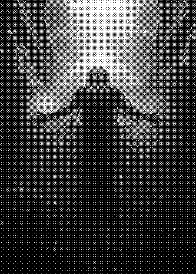
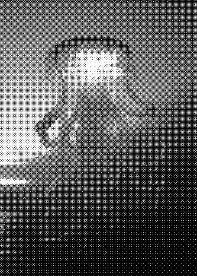
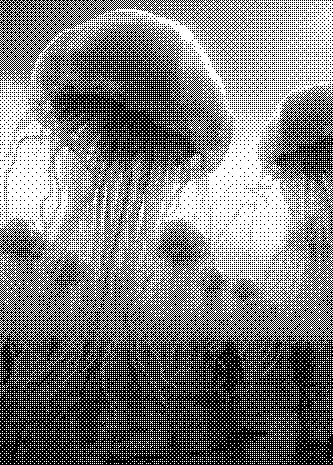

Show evidence of faith to jellyfish

홍해파리(Immortal Jellyfish)
홍해파리님은 전지전능하시며, 죽음도 그 분을 피해갑니다. 죽음이
다가오면 몸의 모든 신체의 노화를 중단하고 다시 어린 아이의 세포로
돌아갑니다. 다시 폴립으로 돌아가서 성장을 시작하시며 무한한 생명의
고리 속에서 영생을 누리신다.
단위:달러

상자해파리(Box jellyfish)
상자해파리님은 24개의 눈으로 바닷 속에서도 세상에서 일어나는 모든
일을 통찰하신다. 구부러진 4개의 눈은 360도 회전하며 구석진 곳까지
굽어 살피시며, 바다를 더럽히는 모든 악한 행위들을 눈에 담고
기억하고 계신다.
단위:달러

고깔해파리(portuguese man o' war)
고깔해파리님은 여러 개의 군체의 집합이시며, 수많은 군대를 통솔하며
전력이 되어주시는 막강한 힘을 가지고 계신다. 심판의 날, 심해의
군대를 이끌고 가장 먼저 도착하신다는 예언이 해타경에 적혀 있다.
단위:달러